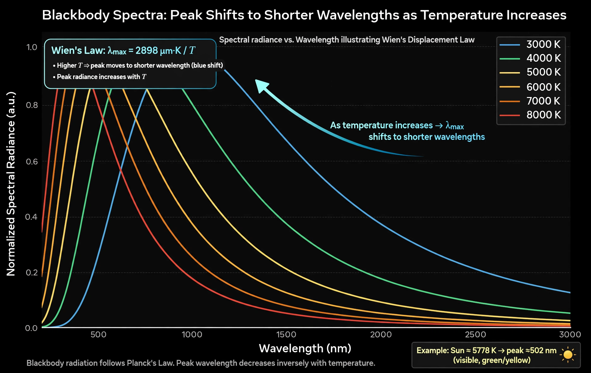

| Wien's displacement law | |
|---|---|
 | |
| Statement | Peak wavelength is inversely proportional to temperature |
| Constant | b = 2.897771955×10−3 m·K |
| Proposed by | Wilhelm Wien, 1893 |
| Derived from | Planck's law |
Wien's displacement law states that the black-body radiation curve for a given temperature peaks at a wavelength inversely proportional to that temperature. The hotter the body, the shorter the wavelength of maximum emission — which is why heated metal glows first dull red, then orange, then white as its temperature climbs.
Wilhelm Wien derived the displacement law in 1893 from thermodynamic and electromagnetic arguments, seven years before Planck's law supplied the full spectrum from which it can be obtained by differentiation (solving the resulting transcendental equation numerically gives the constant). Wien received the 1911 Nobel Prize in Physics for his work on the laws of heat radiation.
The Sun's surface, at about 5,778 K, has λmax near 502 nm — in the green part of the visible spectrum, though scattering and the breadth of the spectrum make sunlight appear white-yellow. The human body at 310 K peaks near 9.3 µm, in the thermal infrared exploited by night-vision and fever-screening cameras. The cosmic microwave background, at 2.725 K, peaks near 1.06 mm, in the microwave band.